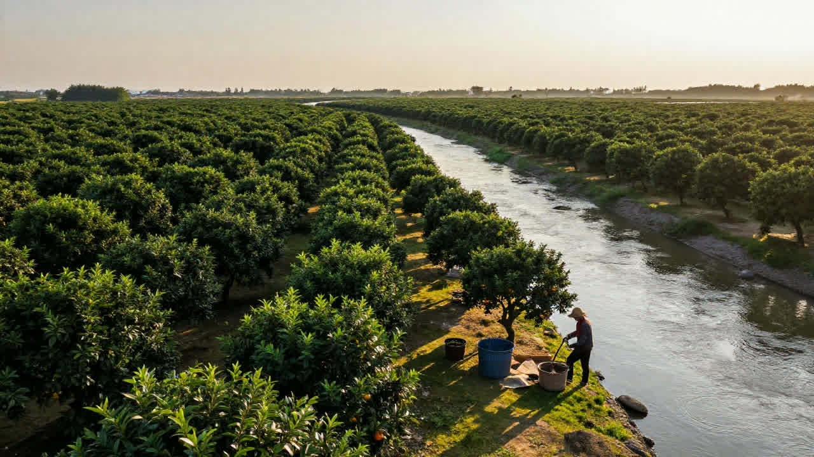

清晨七点，新会陈皮村的仓库大门缓缓推开，陈皮特有的甘醇香气便迫不及待地涌了出来。梁师傅弯着腰，手里捏着一把竹夹子，在层叠的陈皮箱之间穿行。他掀开其中一只封存多年的纸箱，从里面取出一片颜色暗褐、油胞却依然饱满的陈皮，凑近鼻子深吸了一口，然后闭上眼睛，静静地回味。
「呢片皮，五十三年了。」他轻声说，语气里有一种说不清的情绪，「1973年，那年我阿爷喺东甲揀咗呢批皮，点谂都唔敢谂，五十年后会係拍卖场上卖出六万几。」
梁师傅口中的「六万几」，指的是2025年12月那场轰动整个陈皮圈子的拍卖。一片由广东邑祥陈皮有限公司珍藏的1973年新会东甲陈皮，在第七届新会陈皮文化节的拍卖环节中，经过多轮激烈竞价，最终以68800元成交。这个数字，在场的人议论了好几天。有人说是炒作，有人说是稀缺性使然，但在梁师傅看来，那不过是一片好皮应有的价值回归。
「一两陈皮一两金，唔係讲笑。」梁师傅一边小心翼翼地将陈皮放回箱里，一边说，「新会陈皮贵，从来唔係因为边个炒起来，而係呢片皮本身就值咁多。你知唔知，一片正宗新会陈皮，从种树到变成宝，要等幾多年？」
柑园里的时间哲学

要理解新会陈皮为何「贵如黄金」，得先从一颗柑果讲起。
新会地处西江、潭江与银洲湖交汇之处，咸淡水域相互交融，形成了独特的「湿盆地」气候。这里出产的茶枝柑，皮厚、油胞饱满、挥发油含量高，是制作陈皮的顶级原料。然而，即便是这片天赐之地，一棵柑树从种下到开始结果，也需要三年光景。待到果实成熟，匠人采用传统的「正三刀」开皮手法，将柑皮利落地旋开，保留果皮的完整性，而后在晴朗的日子铺开晾晒，让阳光慢慢将水分带走。
呢个时候，皮还係新皮，颜色金黄，气味浓烈刺鼻，挥发油尚未转化，燥性十足。梁师傅说，新皮泡水，喝多了容易上火，「就似一个后生仔，火气正旺，未经历过事。」
真正嘅蜕变，从第三年开始。
新皮被收入仓库，在新会本地的通风环境中缓缓陈化。三年成皮，十年成宝。随住岁月流逝，陈皮中的刺激性挥发油逐渐挥发转化，黄酮类化合物开始富集，果皮的燥性褪去，颜色由金黄转为暗褐再转为深棕，香气也从最初的浓烈变得层次分明——陈香、果香、微微的药香，交织在一起，构成了老陈皮独有的灵魂。
「十年以上的老陈皮，先至係真正的宝贝。」梁师傅讲，「研究讲，陈化满十年的新会陈皮，黄酮类化合物含量比新皮提升超过两倍有几，养生功效完全唔同。」

那些藏在陈皮里的数字
数字往往最能说明问题。
新会陈皮产业的规模，近年嚟扩张得几惊人。2021年，全产业链总产值145亿元；2024年，已经飙升至261亿元。2025年第七届新会陈皮文化节开幕当天，产销合作签约总金额高达9.06亿元。产业定下的目标系：2030年，全产业链产值突破500亿元。
带动就业超过7.8万人，人均增收超过2.6万元。新会柑种植面积超过14万亩，相当于一万多个足球场的面积。这些数字背后，係无数个像梁师傅这样的家庭，几代人扎根喺柑园与仓库之间，将青春与岁月托付给呢片小小的果皮。
更值得注意的係产业升级的方向。传统农业係卖原料，但新会陈皮早已唔再停留喺「卖皮」呢个层面。陈皮饮料、陈皮零食、陈皮茶点、陈皮酵素……在新宝堂的产品展厅里，陈皮以各种形态出现在访客面前。国家级非物质文化遗产新会陈皮炮制技艺代表性传承人陈柏忠话，电商渠道打开咗北方市场，亦卖到东南亚，「越来越多年轻人爱上新会陈皮，销售额每年都以可见的速度增长。」
数字溯源系统亦为产业护航。消费者买陈皮，只需扫描包装上的二维码，便可以查到产区、采摘时间、进仓时间、陈化年份等详细信息。目前，新会区已采集9377家种植户、面积13.9万亩的种植地块、2092家经营主体的数据，通过系统完成的交易比例超过七成。梁师傅话，呢个系统就好似陈皮的「身份证」，边个敢造假，一扫描就知。
一杯陈皮水的养生智慧
讲咗咁多产业数据，但对于普通人嚟讲，最关心的还是：饮陈皮水，到底有咩好处？
其实，陈皮的养生价值，喺中医典籍中早有记载。《本草纲目》称其「苦能泄，辛能散，温能和」，认为陈皮具有理气健脾、燥湿化痰的功效。现代医学研究亦发现，新会陈皮中富含橙皮苷、黄酮类化合物和挥发油等活性成分，对人体有确切的调理作用。
梁师傅分享咗一个常见的场景：老人家秋冬季节咳唔停，痰多气紧，炖一壶陈皮水，分次饮，可以帮助稀释痰液，减少咳嗽频率。若果系受凉引起的寒痰，加几片生姜一齐煮，散寒效果更好。但要注意，陈皮性温，体内有热、阴虚火旺的人群就唔太适合饮太多，孕妇和儿童亦要谨慎，最好先问过医生。
对于长期坐办公室、饮食油腻、缺乏运动的城市人，陈皮水的核心价值在于调理脾胃。挥发油成分能够温和刺激肠胃蠕动，促进消化液分泌，饭后腹胀、食欲不振时，饮一杯温热的陈皮水，肠胃舒服好多。
「但最紧要嘅一点，」梁师傅强调，「就係年份。你买一年新皮嚟焗水，燥性强，饮得多反而上火。至少要三年以上，先开始有养生嘅功效。」
一片老陈皮，教识我噃
采访尾声，梁师傅带我去睇咗佢私人收藏的一批陈皮。仓库深处，有一个专门的房间，存放住佢阿爷、爸爸再传落嚟的老陈皮。最老的一片，年份已经唔记得了，颜色深得发黑，但油胞依然清晰可见，轻轻一闻，陈香浓郁而绵长。
「我阿爷成日讲，陈皮係一样好奇怪嘢，你唔可能靠佢搵食，佢係慢慢嚟呃你呃你呃你，令你上瘾。」梁师傅笑住话，「你今年睇佢，佢仲係咁；明年再睇，佢已经唔同咗。呢个就係时间喺皮上面留低嘅痕迹。」
产业数据係冷冰冰的，但陈皮背后的人情味，却温度十足。七万从业者，有人从香港辞去「金饭碗」返嚟种柑，有人搞电商直播将陈皮卖向全国，有年轻老师傅坚守古法开皮技艺，亦有像我哋呢次访问的梁师傅，默默喺仓库里睇住呢啲皮，等时间将新会陈皮慢慢变成宝。
68800元买一片1973年的陈皮，究竟值唔值？梁师傅冇正面答我。
「你试过饮一杯真正五十年老陈皮冲的水，你就知咩嘢叫值。」
窗外，新会的秋日阳光正好，仓库门口的广场上，几位工人正在晾晒新一批开好的陈皮。金黄色的果皮铺满竹筛，在阳光下闪闪发亮。
再过三年，呢啲新皮就会开始它们漫长的陈化之路。五十三年后，会唔会有人像今日咁，喺另一间仓库里，将它们取出来，闻一闻，然后讲一句：「呢片皮，五十年了」？
呢个，或许就係新会陈皮最深奥的秘密——佢唔只係一片果皮，仲系一段可以触摸的时间。